A simple, step-by-step guide for Ullidam’s clinicians and the practice coordinator: signing in, your day, bookings, schedule, client records, session notes and more.
Version 1.0 · November 2026 The screens in this manual show made-up sample people. No real client information appears in it.
Before you start
Important: practice version
This version of the portal is for training and practice with sample data. Please do not enter real client information yet. Ullidam will tell you when the final security steps are complete (an extra sign-in check with an authenticator app, automatic backups and an independent security review).
What is the portal?
The portal is Ullidam’s private website for clinicians. In one place you can:
see today’s sessions and join them,
keep your working hours up to date (clients book from these),
keep your clients’ records and session notes, safely,
see how your practice is going, and keep your public profile current.
The practice coordinator uses the same portal to enter and confirm bookings.
What you need
A phone, tablet or computer with internet. Any modern browser works (Chrome, Safari, Edge).
The portal address. The coordinator will give it to you (for example ullidam.com/portal).
Your own 6-digit PIN. The first time, the coordinator gives you a one-time setup code to create it.
Words used in this manual
Word
What it means
PIN
Your secret 6-digit number for signing in. Only you know it.
Setup code
A one-time code from the coordinator, used to create a PIN (first time, or if you forget it). Works once, for 24 hours.
Booking
A session a client has asked for or that has been confirmed.
Request
A booking that is waiting for the coordinator to confirm a time.
Slot
One session time in your schedule, for example 6:30 PM.
Shift
A part of the day: Morning, Afternoon or Evening.
IST
India Standard Time. All schedule times in the portal are India time.
Draft / Sign
A note you are still writing is a draft. When you sign it, it is locked for good.
Addendum
A dated addition to a signed note, used instead of changing it.
Contents
1 Six rules that keep records safe
2 Signing in
3 Finding your way around
4 Today: your home page
5 Bookings
6 Your schedule
7 Clients
8 Session notes
9 Analytics
10 Your profile
11 Settings
12 For the coordinator
13 Questions and problems
14 Quick reference
1
Six rules that keep records safe
Our clients trust us with private things. These six habits protect them, and you.
Your PIN is yours alone. Never share it, not even with the coordinator. Nobody at Ullidam will ever ask for it.
Lock the screen when you step away. Press Lock now at the top of the screen. The portal also locks itself after 15 quiet minutes.
In public places, turn on Hide names. Client names and details are blurred until you turn it off.
On a shared computer, always sign out when you finish.
Never photograph or screenshot client information.
Lost your phone? Tell the coordinator at once, and use Sign out on every device (Settings) from another device.
Good to know
Only you can see your clients and notes. The coordinator cannot read your notes. Names, phone numbers and notes are stored in a scrambled (encrypted) form, and every sign-in and record you open is logged.
2
Signing in
The first time (with a setup code)
Ask the coordinator for your setup code. It works once, for 24 hours.
Open the portal address and tap your photo.
Tap First time here? Use your setup code.
Type the setup code, then choose a 6-digit PIN and type it again.
Tap Set PIN and sign in. You are in.
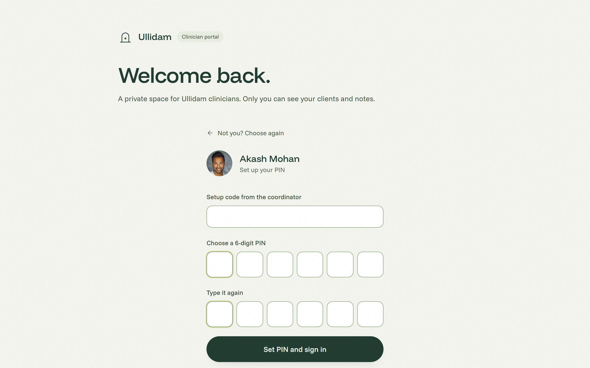
First sign-in: the setup code, then your new PIN twice.
Choosing a PIN Pick 6 digits you will remember but others cannot guess. Runs and repeats like 123456 or 111111 are not accepted.
Every day
Open the portal and tap your photo.
Type your 6-digit PIN. Each box fills as you type.
Tap Sign in. Your Today page opens.
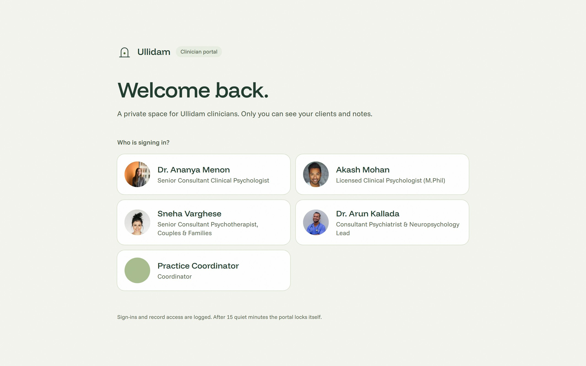
Step 1: choose your photo.
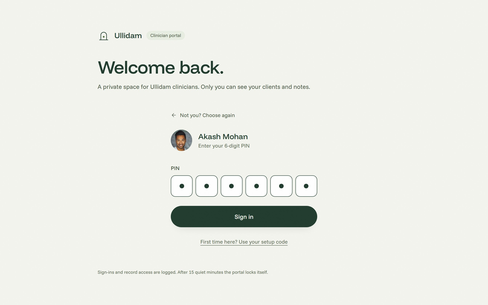
Step 2: type your PIN and sign in.
If something goes wrong
What happened
What to do
I forgot my PIN
Ask the coordinator for a new setup code, then use First time here? to set a new PIN.
“Too many attempts”
After 5 wrong PINs your account rests for 15 minutes, to keep records safe. Wait, then try again.
“You were signed out”
This happens after 20 quiet minutes, or 12 hours after you signed in. Just sign in again. Saved work is kept.
3
Finding your way around
The portal looks the same for every clinician. Only the information is yours.
On a computer
The menu is on the left: Today, Bookings, Schedule, Clients, Analytics, Profile and Settings. Your name and Sign out are at the bottom of the menu.
On a phone
The menu is at the bottom: Today, Bookings, Schedule, Clients and More. Tap More for Analytics, Profile, Settings and Sign out.
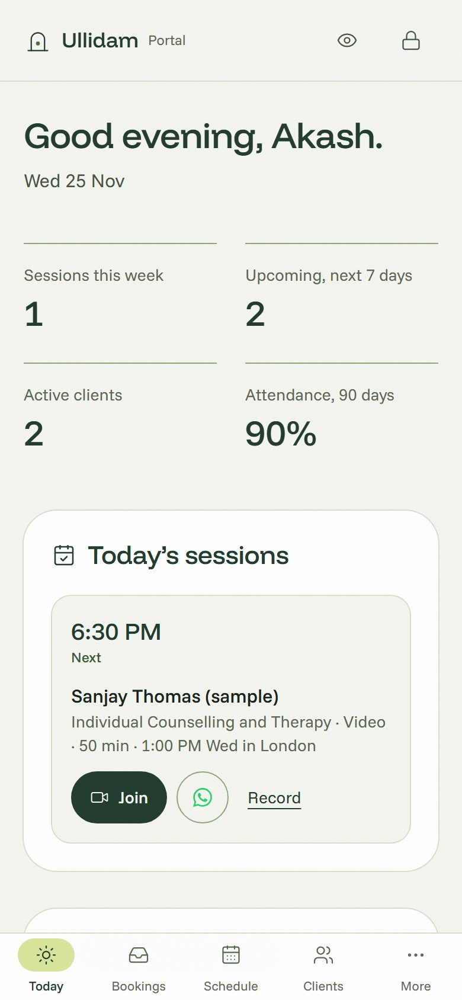
Today on a phone.
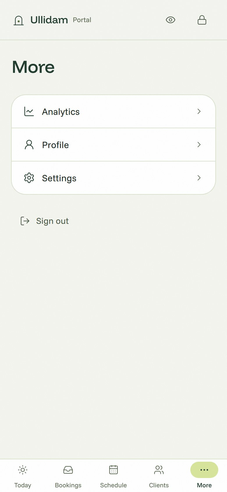
The More page.
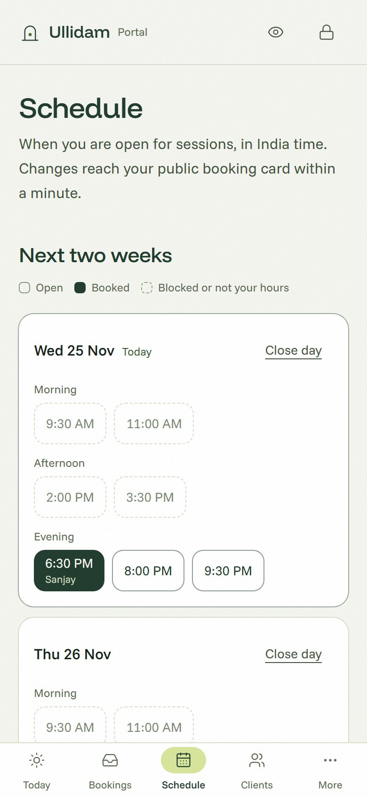
Schedule on a phone.
Two buttons at the top, on every page
Hide names blurs client names and contact details. Tap again to show them.
Lock now hides everything until you type your PIN. Use it whenever you step away.
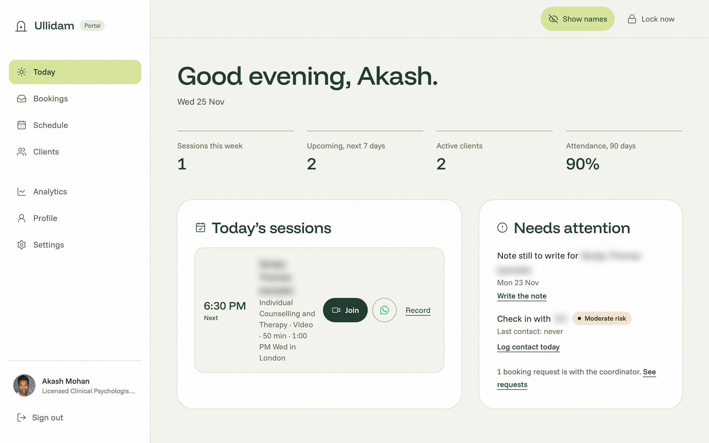
Hide names on: client names are blurred.
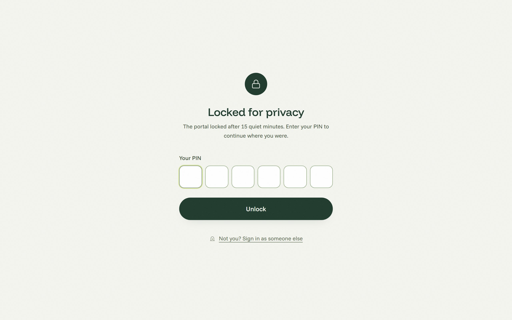
Locked: type your PIN to continue where you were.
4
Today: your home page
Today opens after you sign in. It shows your day at a glance.
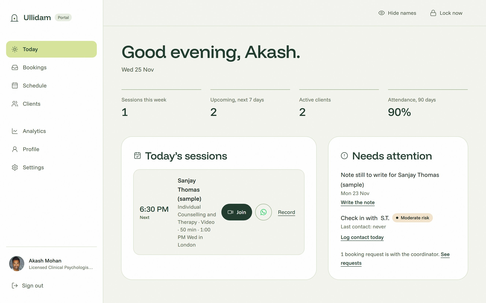
The Today page.
The four numbers
Number
What it means
Sessions this week
Sessions you have completed since Monday.
Upcoming, next 7 days
Confirmed sessions in the coming week.
Active clients
Clients whose status is Active.
Attendance, 90 days
Of the sessions booked in the last 90 days, how many the client attended.
Today’s sessions
Each session shows the time in India time and, for clients abroad, their own local time. Then:
Join opens the video call (for video sessions).
Call phones the client (for audio sessions).
The green WhatsApp button opens a chat with the client, for example if they are late.
Record opens the client’s record.
Needs attention
A short list of things to do: sessions to mark as completed, notes still to write, clients at risk who have not been contacted for 14 days, and follow-ups that are due. Each item has a link that takes you straight there.
5
Bookings
Clients message Ullidam on WhatsApp. The coordinator enters the request and confirms a time with the client. You then see it here.
Bookings has three tabs: Requests (waiting for the coordinator), Upcoming and Past.
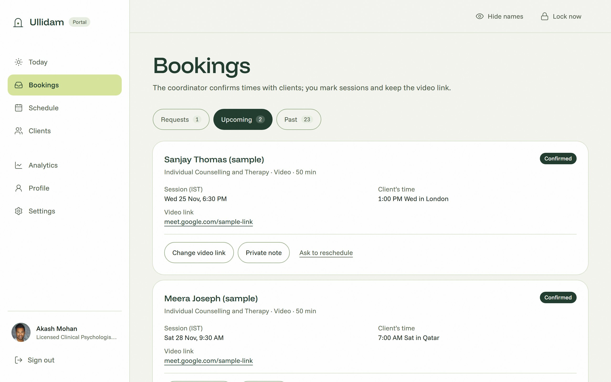
Upcoming sessions, with the client’s own time and the video link.
Add or change the video link
Open Upcoming and find the session.
Tap Add video link, paste the link (it must start with https://) and tap Save.
After a session
Open Past (or follow the link from Today).
Tap Completed if the session happened, or No-show if the client did not come. These buttons appear once the session time has started.
Then write the session note (chapter 8).
Private note and rescheduling
Private note: a short note on the booking that only you can see.
Ask to reschedule: write why the session needs moving. The coordinator sees it and arranges a new time with the client.
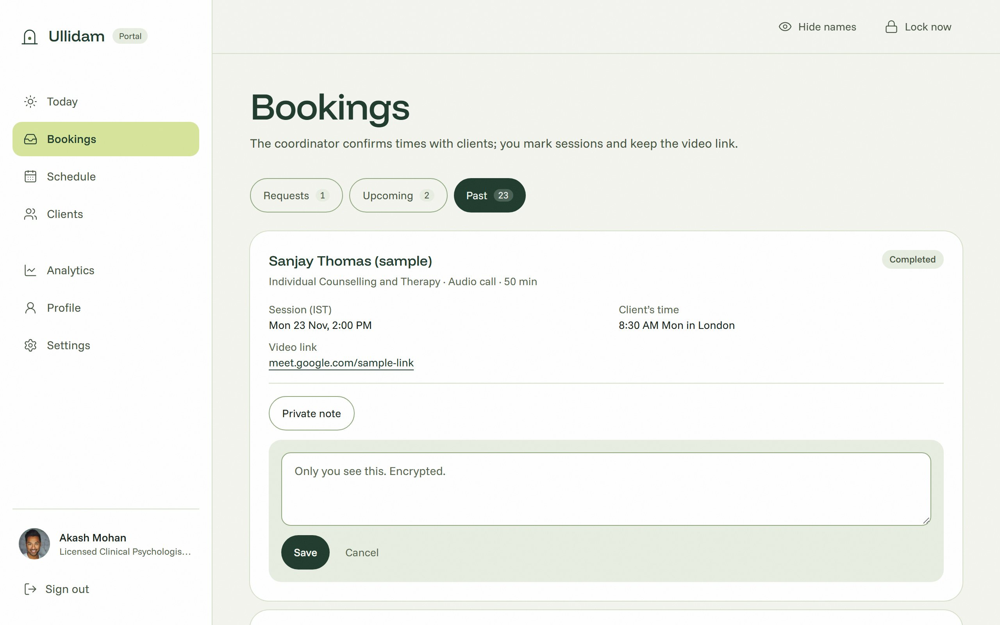
Writing a private note on a booking.
6
Your schedule
Your schedule decides which times clients can choose on your public profile page. Changes appear there within a minute. All times are India time.
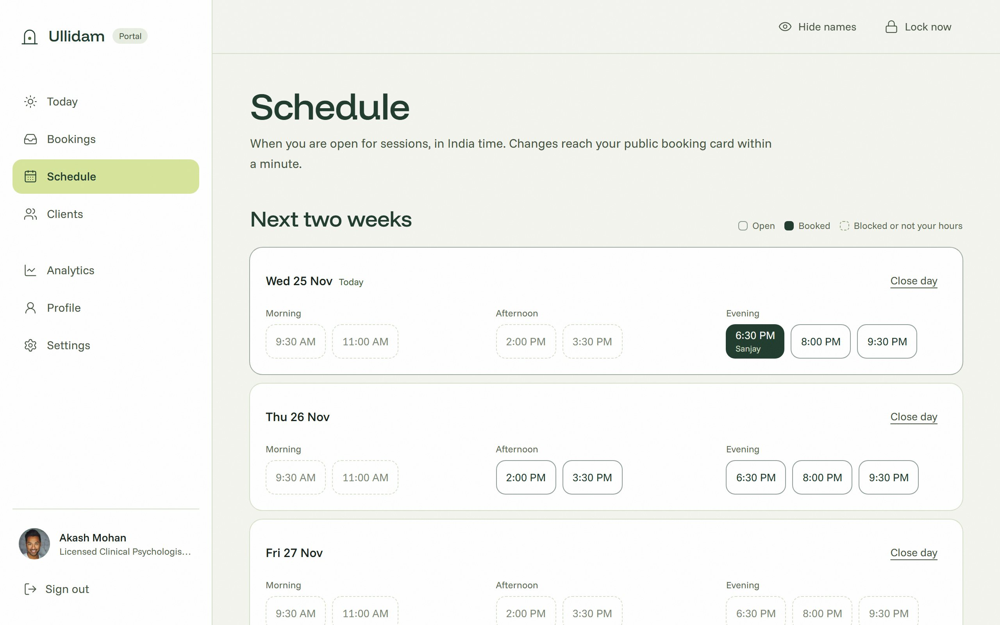
The next two weeks, day by day.
What you see
Meaning
White button, green outline
Open: clients can book this time.
Filled green, with a first name
Booked by that client. It cannot be blocked here.
Dotted outline
Blocked for that day, or not one of your usual hours.
Change one day
Block or open a single time: tap it. Tap again to undo.
Close a whole day: tap Close day on that day. Tap Reopen day to undo. Booked sessions stay booked.
Your usual week
Set which shifts you normally work. Every day follows this unless you change that day. A filled green button means you work that shift; tap it to switch it on or off.
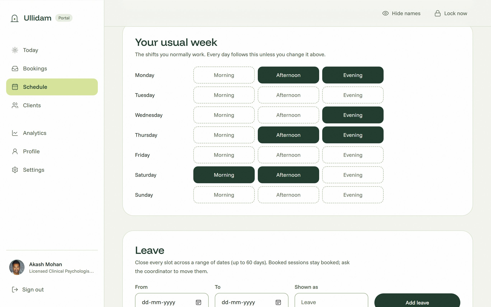
Your usual week and Leave.
Going on leave
In Leave, choose the first and last day (up to 60 days).
Optionally change “Shown as” (for example “Conference”).
Tap Add leave. Those days close. Sessions already booked stay booked: ask the coordinator to move them.
7
Clients
Your clients only. Search by name or alias, and filter by status (Active, Paused, Discharged, Archived).
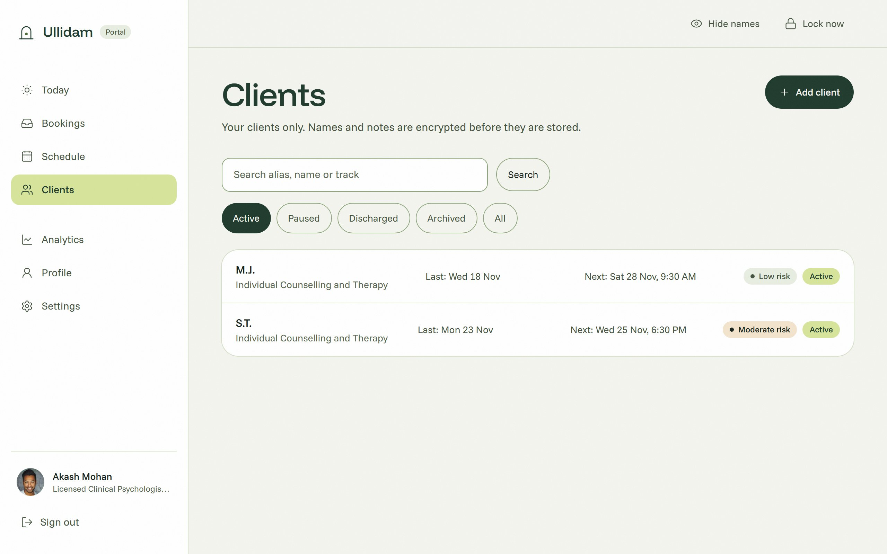
The client list, with each client’s last and next session.
Add a client
Tap Add client.
Fill in the details. The alias is a short name only you see in lists (for example “R.K.”), so full names are not on screen all the time.
Record consent: the date and how it was given. You cannot save without it.
Tap Add client.
Good to know Ullidam sees adults only. The portal will not save anyone under 18. Bookings with the same WhatsApp number are linked to the client automatically.
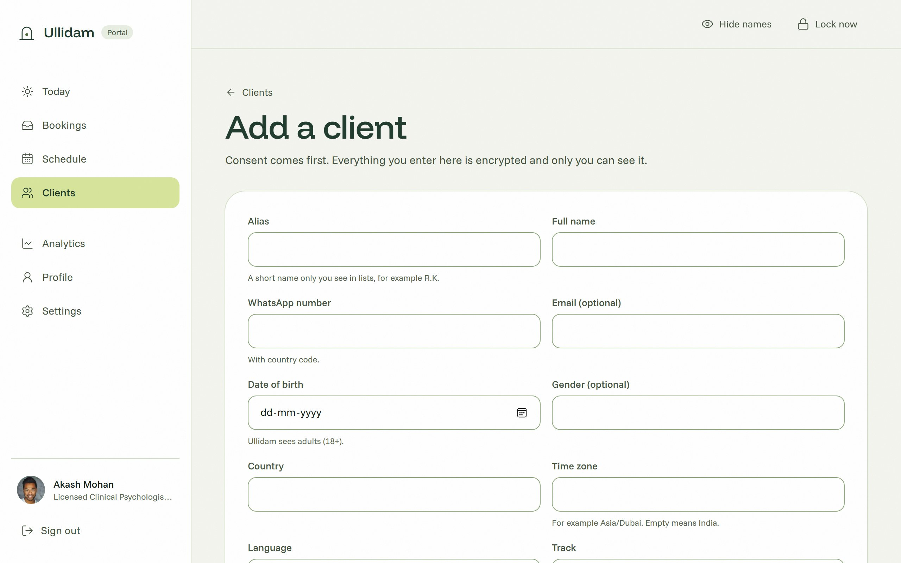
Adding a client.
The client record
Tap a client to open their record. It has four parts:
Session notes: start a new note, and see all notes, newest first.
Sessions: all their bookings, with a Write note link where one is missing.
Details: contact information. Tap Edit details to change it, or Log contact today after you speak to them.
Status: Active, Paused, Discharged or Archived. Archiving needs a reason; nothing is ever deleted.
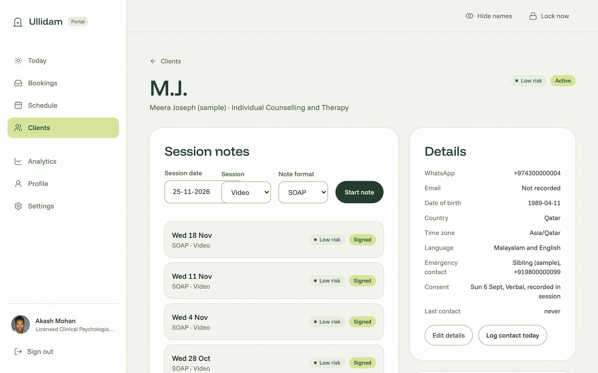
A client record: notes on the left, details and status on the right.
Clients at risk A client marked Moderate or High risk should have an emergency contact. The record reminds you if it is missing.
8
Session notes
Start a note
Open the client’s record.
Under Session notes, check the date, choose Video or Audio call, and pick a format: SOAP, DAP or Free text.
Tap Start note.
Write the note
Fill in the boxes. Below them you can add a diagnosis (start typing an ICD-11 code or choose from the list), the approaches you used, the risk level, scores (PHQ-9, GAD-7) and a follow-up date.
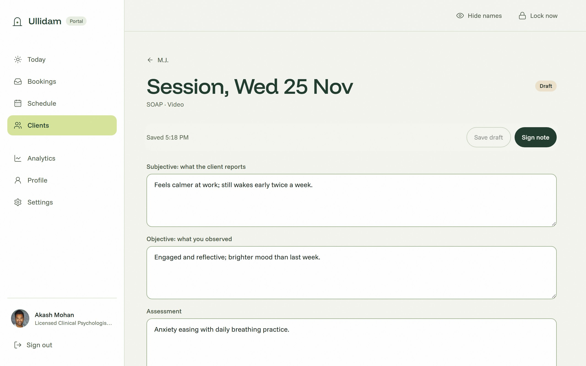
A draft note. The top line shows whether it is saved.
Saving happens by itself
Your draft saves 25 seconds after you stop typing, when you move to another box, and when you tap Save draft. The top line says Saved with the time, or Not saved yet.
Don’t close the page while it says “Not saved yet” Tap Save draft first, and check your internet connection.
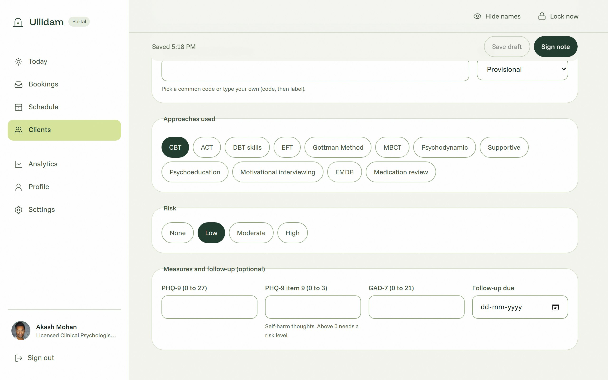
Approaches used, risk level, scores and follow-up date.
Sign the note
When the note is complete, tap Sign note and confirm.
The note is now locked for good. This protects the record.
High risk If you choose High risk, or the PHQ-9 item 9 score is above 0, the portal shows the practice’s safety steps when you sign: contact the client today, agree a safety plan, share crisis numbers for their country, inform the clinical lead, and if there is immediate danger contact local emergency services. (If item 9 is above 0, you must choose a risk level before signing.)
Changing a signed note
To add or correct something: open the note, write an addendum with the reason, and tap Add addendum. It is dated and shown under the note.
If the note was written by mistake (for example, for the wrong client): tap This note was written in error, give the reason and confirm. The note stays visible, clearly marked. Nothing is deleted.
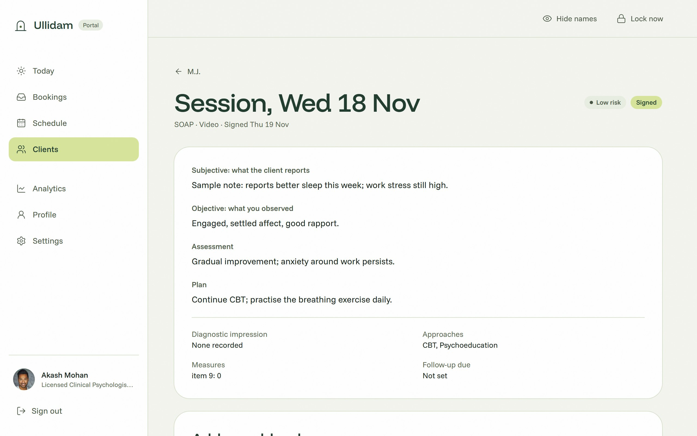
A signed note.
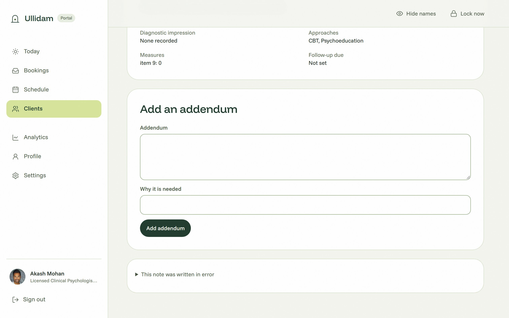
Adding an addendum.
9
Analytics
How your practice is going, from your own sessions only. Weeks start on Monday.
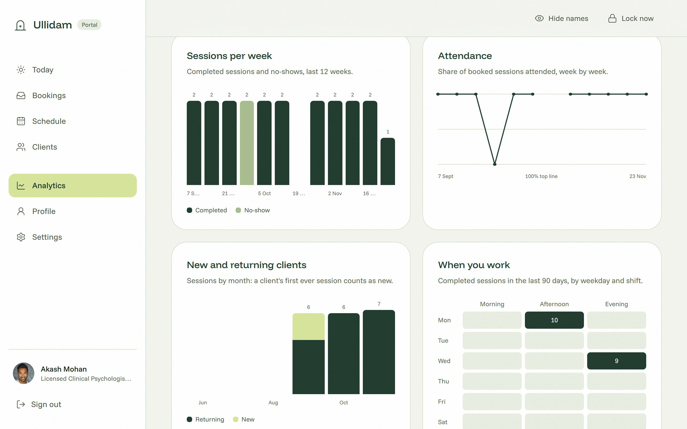
Charts in Analytics.
Chart or number
What it shows
Hours this month
Time spent in completed sessions this month.
Schedule booked
Of the times you offered, how many were booked (last 4 weeks, next 4 weeks).
Sessions per week
Completed sessions and no-shows for each of the last 12 weeks.
Attendance
The share of booked sessions attended, week by week.
New and returning clients
Each month: first sessions (new) and later ones (returning).
When you work
Which days and shifts most of your sessions happen. Darker means more.
Track mix / Where your clients are
Your active clients by type of care, and by country.
Outcome trends
Average change in PHQ-9 and GAD-7 scores between a client’s first and latest score. A minus number means fewer symptoms.
10
Your profile
What visitors see on your page on the Ullidam website.
Edit your bio, how you work, your specialties and languages (one per line). The preview on the right shows how it will look.
Tap Send for review.
The coordinator reviews it. Once approved, your public page updates. If it comes back as Returned, read the note, make the change and send again.
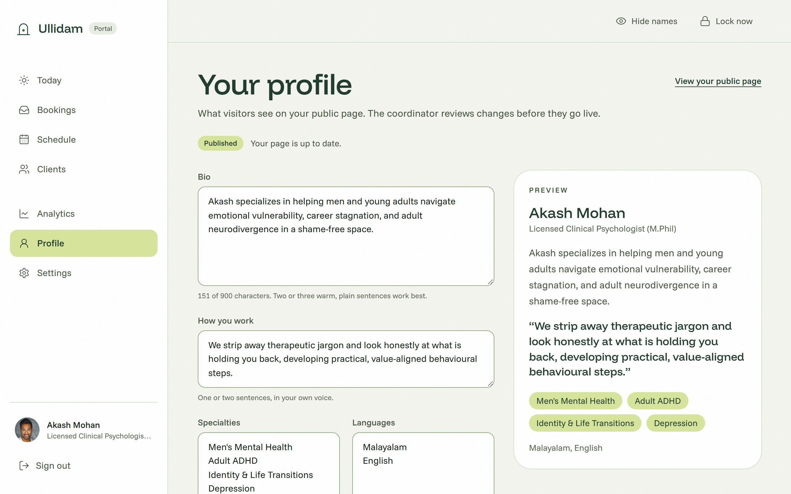
Editing your profile, with a live preview.
11
Settings
Change your PIN
Type your current PIN.
Type your new PIN twice.
Tap Change PIN. Any other phone or computer you were signed in on is signed out.
Sign out on every device
If you lost a phone or used a shared computer, tap Sign out on every device. Every device, including this one, is signed out at once.
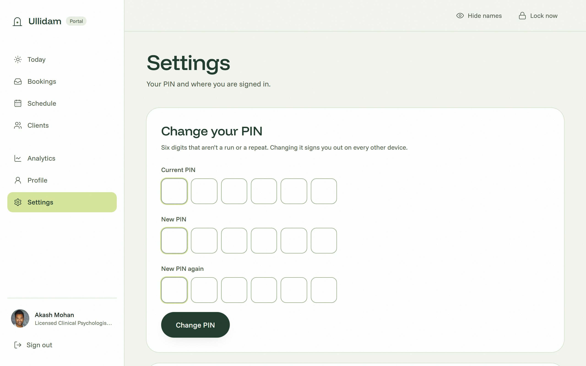
Settings.
12
For the coordinator
The coordinator signs in the same way (tap Practice Coordinator, then your PIN) and sees the Desk. The coordinator does not see clients’ records or notes.
Enter a new booking request
When a client messages on WhatsApp, fill in New booking request: the clinician, the client’s name and WhatsApp number (with country code), the type of care, video or audio, and the session length.
For clients abroad, type their time zone as a city, for example Asia/Dubai or Europe/London. Leave it empty for India.
Choose the client’s preferred time and a backup time (India time).
Tap Add booking request.
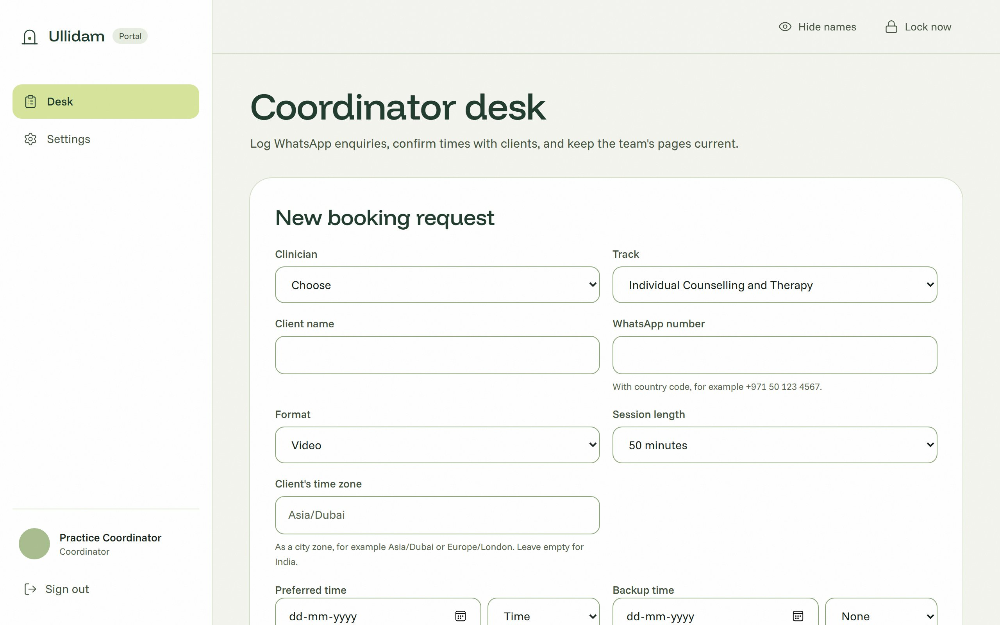
The coordinator’s Desk: entering a booking request.
Confirm a time
In Requests to confirm, each request shows the preferred and backup times, in India time and in the client’s own time.
Agree a time with the client on WhatsApp, then tap Confirm this time under it. The time is now held in the clinician’s schedule.
If a time says No longer open, it has been taken or blocked. Use the other time, or open New times or cancel to enter new times.
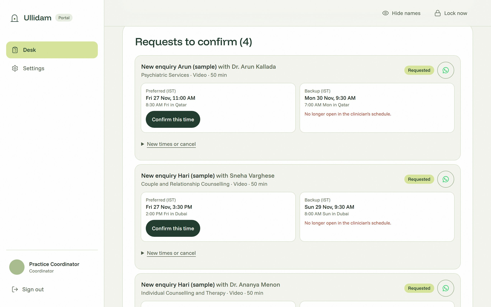
Requests waiting for a confirmed time.
Cancel a session
In Upcoming sessions, tap Cancel next to a session. The time opens again for other clients.
Review profile changes
When a clinician sends their profile for review, it appears in Profile changes to review. Read it, then tap Approve and publish, or write a short note and tap Return.
Give a clinician a setup code
In Sign-in codes, tap Issue setup code next to the clinician and confirm.
The code appears once. Share it privately: by phone or in person, never in a group chat.
The clinician uses it within 24 hours to set their own PIN (chapter 2). Use this too when a clinician forgets their PIN.
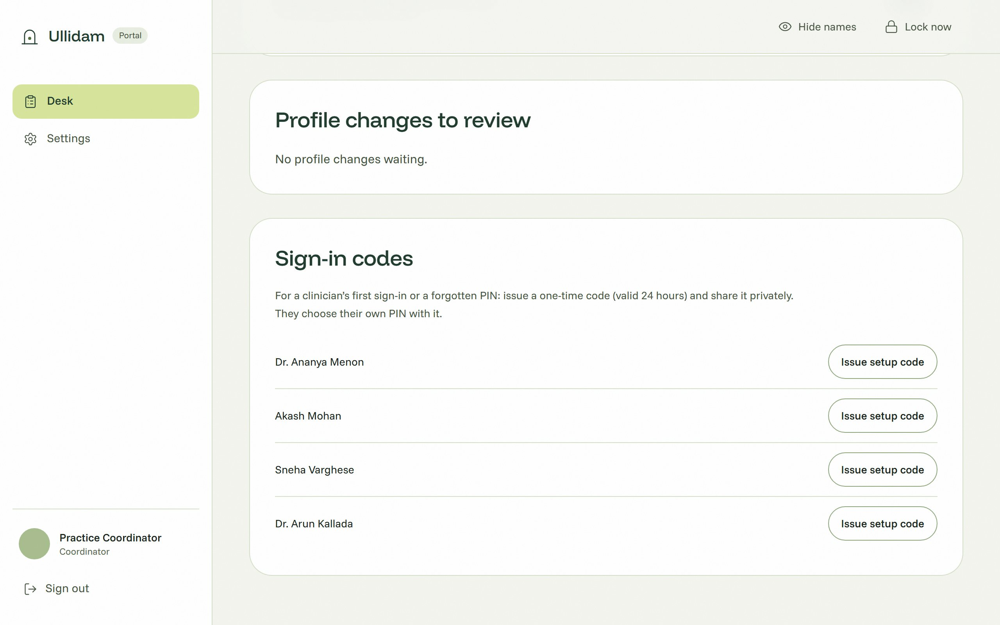
Sign-in codes for each clinician.
13
Questions and problems
Question or problem
Answer
I can’t sign in.
Check you tapped your own photo and typed your PIN. After 5 wrong tries, wait 15 minutes. If you forgot your PIN, ask the coordinator for a setup code.
The portal signed me out by itself.
It does this after 20 quiet minutes, or 12 hours after you signed in, to keep records safe. Sign in again; saved work is kept.
My note says “Not saved yet”.
Stay on the page, check your internet, and tap Save draft.
“This note was changed elsewhere”.
The note was saved from another device. Copy your new text, reload the page, then paste it back.
I can’t mark a session as completed.
The buttons appear once the session time has started.
A time I blocked still shows on my public page.
Wait a minute, then refresh the public page.
I made a mistake in a signed note.
Add an addendum, or mark it as written in error (chapter 8).
The portal won’t save a new client.
Check consent is filled in, and that the date of birth is 18 or older. Under-18s should be referred to a child and adolescent service.
I lost my phone.
Tell the coordinator now, and use Sign out on every device from another device.
Who can see my notes?
Only you. The coordinator cannot. Notes are stored encrypted.
Need more help? Message the practice coordinator.
14
Quick reference
I want to...
Go to, then tap
See today’s sessions
Today
Join a video session
Today → Join
Add a video link
Bookings → Upcoming → Add video link
Mark a session done or missed
Bookings → Past → Completed / No-show
Block a time
Schedule → tap the time
Take a day off
Schedule → Close day
Go on leave
Schedule → Leave → Add leave
Change my usual hours
Schedule → Your usual week
Add a client
Clients → Add client
Write a session note
Clients → the client → Start note
Lock a note
The note → Sign note
Correct a signed note
The note → Add addendum
Record that I spoke to a client
The client → Log contact today
See my numbers
Analytics
Update my public page
Profile → Send for review
Change my PIN
Settings → Change PIN
Hide client names
Hide names (top of the screen)
Step away safely
Lock now (top of the screen)
Ullidam Clinician Portal · User manual version 1.0 · November 2026. Screens show made-up sample data.